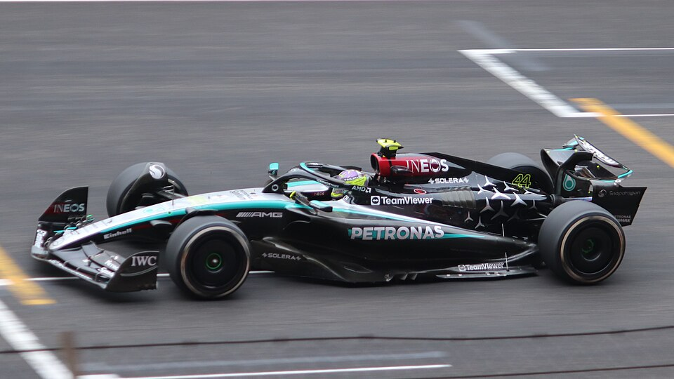
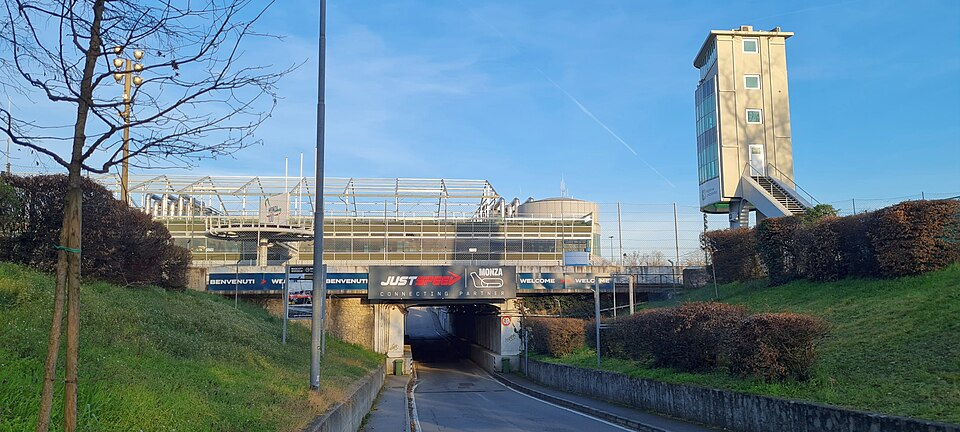
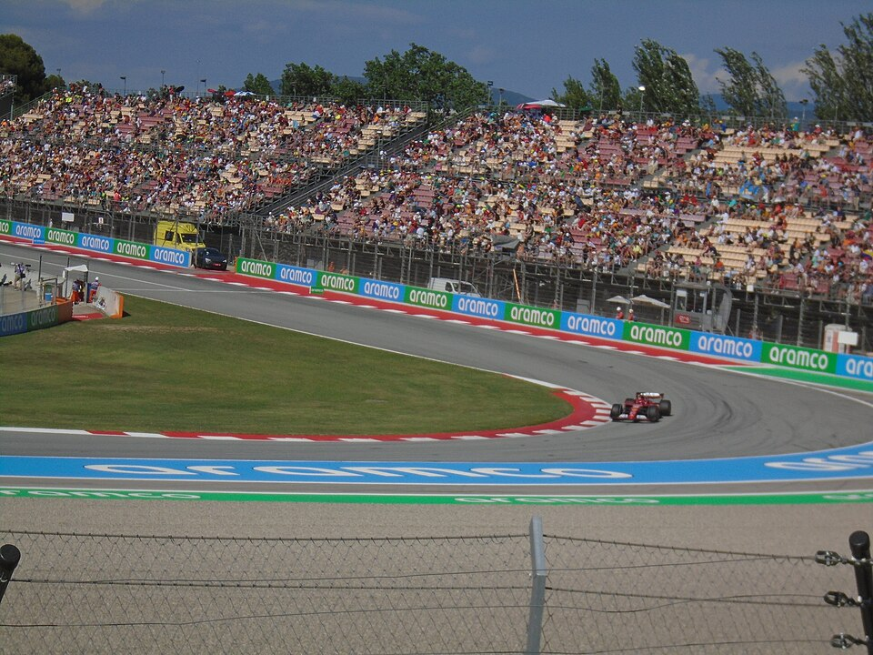

2025 Formula 1 Season
Click any circuit in the bar above to open its profile page — lap length, track facts, and race details. This site covers nine grand prix venues from the 2025 calendar, plus driver profiles and the full team grid.

Final Project · Berkay Gündoğdu · 2025 F1 Season
Click any circuit in the bar above to open its profile page — lap length, track facts, and race details. This site covers nine grand prix venues from the 2025 calendar, plus driver profiles and the full team grid.
The dark header shows 2025 Calendar buttons. Click Bahrain, Monaco, Monza, or any other track to jump straight to that circuit's page. You can also open the Circuits menu below for the full list.


